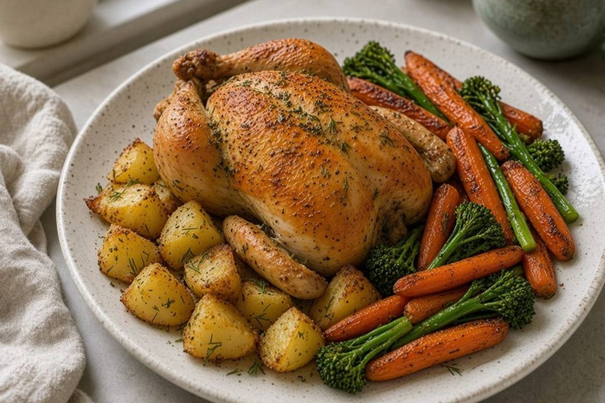
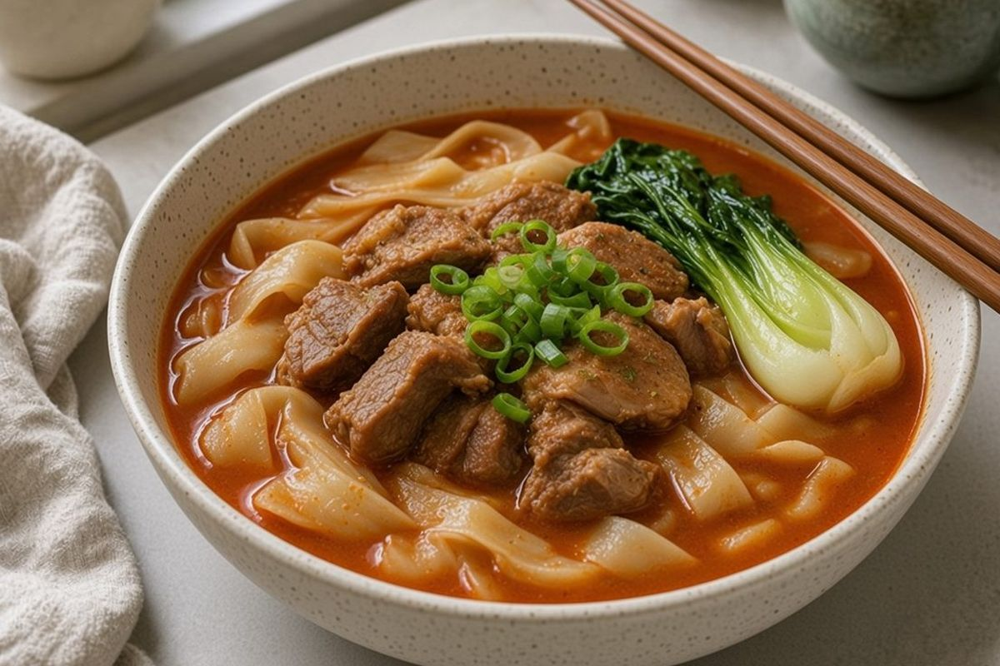

Directions Feast Tin Poster Book Desk

Larder
This week's dinners
Week of Monday 23 November. Shop arriving Friday 20 November, 16:00–20:00.
Choices agreed. The choose-by date was Tuesday 17 November.
Cooking starts the day the shop arrives. Earlier days stay as they are.
This week is done. The next one is in the latest email.
Tonight
Today's dinner is marked on this phone.
9 dinners · 2 leftovers, 5 to cook, 2 from the freezer · spare in the freezer: 1 · shop by 27 November
The week
Move a dinner up or down if the day does not suit. The date stays put. What you mark stays on this phone until you email it.
Fri 20
Already in · Leftovers, not shopped again
Fridge leftovers: lemon chicken traybake
Delivery 16:00–20:00. Salmon straight into the freezer.
Where does the food go?
Sat 21
Already in · Leftovers, not shopped again
Fridge leftovers: filled pasta
Read the meat labels before Sunday's order of work.
Where does the food go?
Sun 22

Corn-fed roast chicken, Maris Piper roasties, carrots and tenderstem
Open the card
Prep day. Meatballs and pork stew base go into the freezer.
Sunday prepJude's plateLeaves leftovers
Jude: Set Jude's plain chicken and mash aside before any salted butter or pepper.
Where does the food go?
Mon 23
Football night · From the freezer · Reheat only

Freezer shepherd's pie
Football night: reheat only. Out of the freezer on Sunday night.
Reheat only. From the fridge, 180°C fan for 35–45 minutes, until piping hot in the middle. If the centre is still frozen, give it longer.
Jude: Soft mash or the soft filling from the edge. No extra salt.
Where does the food go?
Tue 24

Chicken shawarma bowls with flatbreads and houmous
Open the card
Uses Sunday's chicken. Keep it within 2 days of the roast. The chicken is not bought again.
QuickJude's plate
Uses leftovers from Sunday. The main pack is not bought again.
Jude: Take Jude's chicken and a few chickpeas out before any spice. Leave out the houmous and the Peppadews.
This stays on its day. The chicken is only good for two days after the roast.
Where does the food go?
The spare pie can cover the night. It is not bought again.
Wed 25

Harissa salmon with crushed potatoes
Open the card
Defrost on Tuesday night. Can swap with Thursday or Friday.
QuickJude's plate3 for £10
Jude: Cut Jude's piece of salmon and bake it plain, before the harissa.
Where does the food go?
Thu 26

Lamb and carrot meatballs in tomato sauce with tagliatelle
Open the card
Shortest-dated meat. Frozen on Sunday, so it can move. Defrost the night before.
QuickSunday prepJude's plate3 for £10
Jude: Lift Jude's meatballs and a spoon of sauce out before you season.
Where does the food go?
Fri 27

Gochujang pork shoulder stew with hand-ripped noodles
Open the card
Frozen on Sunday, so it can move. Defrost the night before.
QuickSunday prepJude's plate3 for £10Uses the veg box
Jude: Take Jude's plain pork, carrot and broth out before the gochujang.
Where does the food go?
Sat 28
From the freezer · From the freezer · Reheat only

Freezer lasagne
The spare shepherd's pie stays frozen as the buffer.
Reheat only. From the fridge, 180°C fan for 35–45 minutes, until piping hot in the middle. If the centre is still frozen, give it longer.
Jude: Soft mash or the soft filling from the edge. No extra salt.
Where does the food go?
Sunday, on one screen
Sunday prep
-
On arrival. Salmon straight into the freezer. Check the use-by dates on the lamb, pork and chicken.
-
Sun 12:30. Lamb meatballs. Shortest-dated mince. Mix, roll, bake, cool and freeze.
Jude: Lift Jude's meatballs and a spoon of sauce out before you season.
-
Sun 13:00. Pork stew base. Brown, simmer, then freeze both pots.
Jude: Take Jude's plain pork, carrot and broth out before the gochujang.
-
Sun 15:30. Roast chicken, then potatoes and carrots. Dinner about 17:15.
Jude: Set Jude's plain chicken and mash aside before any salted butter or pepper.
-
Sun after dinner. Strip the chicken for Tuesday. Unsalted stock from the carcass. Freeze 500 ml for Friday.
Jude: Set Jude's plain chicken and mash aside before any salted butter or pepper.
-
Sun bedtime. Shepherd's pie from the freezer to the fridge for Monday football.
Out of the freezer
- Sunday 22 November: take out Freezer shepherd's pie for Monday 23 November.
- Friday 27 November: take out Freezer lasagne for Saturday 28 November.
Jude's plate
- No added salt, sugar or honey. Take his portion out before any salt, paste or sauce.
- He loves mash, so chicken goes in finely chopped through mash. Salted butter stays on the adult side.
- Check every bone in the salmon. Make the meatballs and noodles soft and small.
Local pick-up
- Gochujang, a small tub
- Fresh ginger
- Spring onions
- Harissa paste, or use the Peppadew swap on the salmon card
- A garlic bulb, if the last one is used up
Open the shop list
Next time
Swipe right to cook it another week, or left to leave it. The dinners above stay as they are.
Corn-fed roast chicken, Maris Piper roasties, carrots and tenderstem
Chicken shawarma bowls with flatbreads and houmous
Harissa salmon with crushed potatoes
Lamb and carrot meatballs in tomato sauce with tagliatelle
Gochujang pork shoulder stew with hand-ripped noodles
Something missing?
Who is sending this?